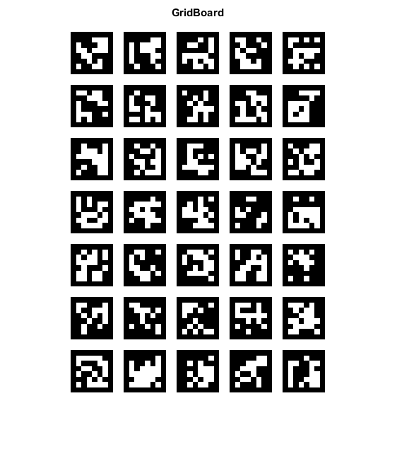

ArUco Grid Board Image Demo
This example shows how to create an ArUco grid board image.
Sources:
Contents
Board
% params markersX = 5; % Number of markers in X direction markersY = 7; % Number of markers in Y direction markerLength = 60; % Marker side length (in pixels) markerSeparation = 15; % Separation between two consecutive markers in the grid (in pixels) dictionaryId = '6x6_250'; % dictionary id margins = markerSeparation; % Margins size (in pixels) borderBits = 1; % Number of bits in marker borders imageSize = [markersY, markersX] .* ... (markerLength + markerSeparation) - markerSeparation + 2 * margins; % create board dictionary = {'Predefined', dictionaryId}; board = {'GridBoard', ... markersX, markersY, markerLength, markerSeparation, dictionary};
Display
% show created board boardImage = cv.drawPlanarBoard(board, fliplr(imageSize), ... 'MarginSize',margins, 'BorderBits',borderBits); imshow(boardImage), title('GridBoard') % save image imwrite(boardImage, fullfile(tempdir(),'GridBoard.png'));